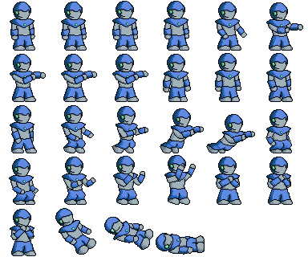

Configuration
Takeaways:
- Native: Configuration is read from environment variables, command line, and the file system.
- WASM: Configuration has to be loaded externally – query parameters, HTML form, XHR.
- Github issue(s): amethyst#2180, amethyst#2214
Native
Native applications read from several kinds of configuration:
Command line arguments: Online play server address
cargo run --bin will --release -- --session_server_address 127.0.0.1
Configuration files: Input settings, log levels
--- logger.yaml
stdout: "Colored" # "Off", "Plain", "Colored"
level_filter: "debug"
module_levels:
- ["amethyst", "warn"]
- ["net_play", "info"]
- ["session_server", "info"]
Assets: UI configuration, images – sprite sheets

WASM
WASM applications don't have access to those forms of input, but can use others:
Query Parameters:
http://localhost:8000/?session_server_address=127.0.0.1
Forms:
On the application's web page: Within the application: See Simulated file system accesses using XHRs: See XML HTTP Requests:
let logger_config = await fetch('app/will/logger.yaml')
.then((response) => { return response.text(); });
wasm_bindgen.WillAppBuilder
.new()
.with_logger_config(logger_config)
.run();
let xhr = XmlHttpRequest::new()?;
xhr.open_with_async("GET", path_str, false)?;
xhr.send()?;
let response = xhr.response()?;
HttpSource.#[cfg(not(target_arch = "wasm32"))]
let background_definition_path_exists = background_definition_path.exists();
#[cfg(target_arch = "wasm32")]
let background_definition_path_exists =
background_definition_path.exists_on_server();
PathAccessExt – caches file.exists() values from the server.